Étude de cas
← Retour aux projets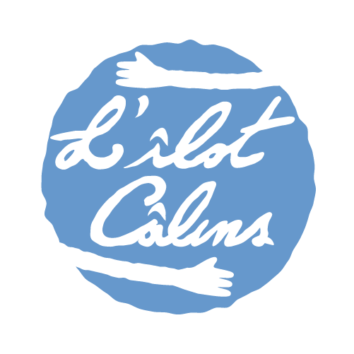
L'îlot câlins
L'îlot câlins est une association à but non lucratif dédiée à l'hospitalisation des enfants en état de critiques graves dans les pays en développement. Un projet difficile ou la charte graphique doit sensibiliser et passer un message fort.
Au commencement
Une demande particulière : concevoir une identité visuelle pour des enfants atteints de pathologies graves. Comment aborder un tel projet ?
Face à ce sujet hautement sensible, ma priorité a été de me placer à hauteur d'enfant. L'identité visuelle n'a donc pas été pensée exclusivement pour convaincre les adultes (parents, donateurs), mais avant tout pour instaurer un environnement accueillant et rassurant pour les jeunes patients.
- Premier défi : donner une dimension graphique au nom de l'association, "L'îlot Câlins".
- Deuxième défi : trouver des formes et des couleurs qui reflètent la douceur, la bienveillance et le soin.
- Troisième défi : construire un storytelling puissant, digne et engageant.
La création du logo
L'idée de base
Dès les premières minutes de réflexion, une image claire m'était apparue. Il me fallait absolument des câlins dans mon logo. La première version était la plus simple : une île en forme de câlins.
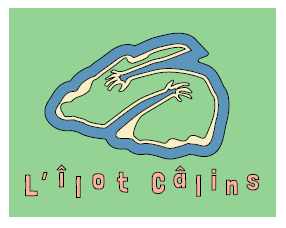
L'accroche narrative
Au lieu de créer une île complète, pourquoi ne pas concevoir les mains d’une créature étrange et mignonne... C'est à ce moment-là qu'une idée d’accroche narrative est née : une île où des Câlins (créature exotique) vivent et soignent les enfants avec leurs câlins magiques.
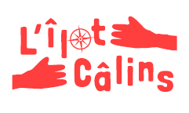
Le style typographique
Le style se renforce et l'écriture du logo est faite à la main pour le rendre unique. Ce prototype montre l’idée de prendre les enfants dans ses bras. Cependant... Une chose manque.
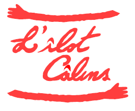
Version finale
Enfin ! Le logo est abouti et reprend tous les besoins visuels. Le choix de rendre le logo négatif (que le dessin et l'écriture soit vides) permet de rendre le visuel plus unifié et reposant pour les yeux. La forme ronde facilite l'adaptation du logo dans tous les supports graphiques. Les proportions, ainsi que toutes les règles d'application du logo sont définies dans la charte graphique.
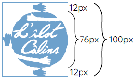
La mascotte : Les Câlins
Au début, je suis partie sur une créature au long bras, avec le pouvoir de savoir les étirer pour câliner, même au loin. La forme simple plaisait au client, mais je trouvais qu'il manquait encore de force.
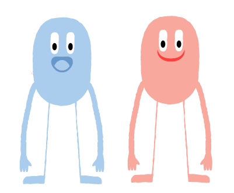
Le problème majeur, c'était l'introduction de la mascotte dans les supports graphiques coloré, et son côté mignion qui ne ressortait pas encore assez. J'ai donc opté pour une couleur supplémentaire : le blanc. Cette couleur permettait d'introduire les Câlins n'importe où sans que cela soit visuellement désharmonisé. J'ai également agrandit leurs yeux.
Pour ne pas toujours le mettre entiers, j'ai créer une manière de l'introduire qui permettait à la fois le rendre présent dans les autres supports sans être trop lourd, et d'accentuer le caractères curieux de la créature.
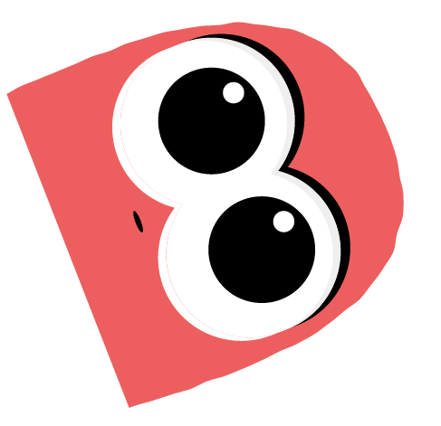
Galerie du projet
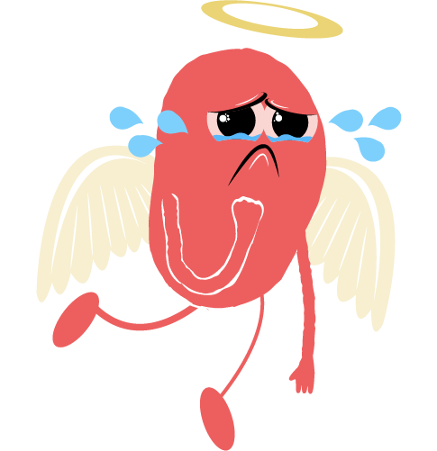
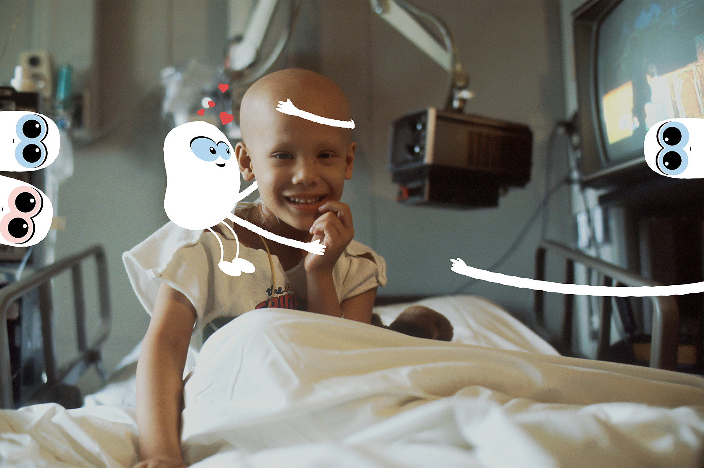
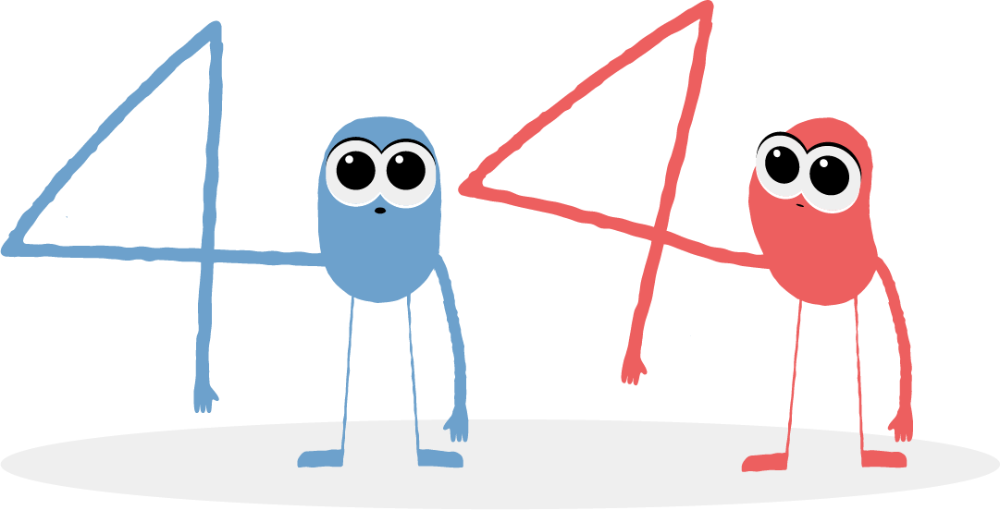
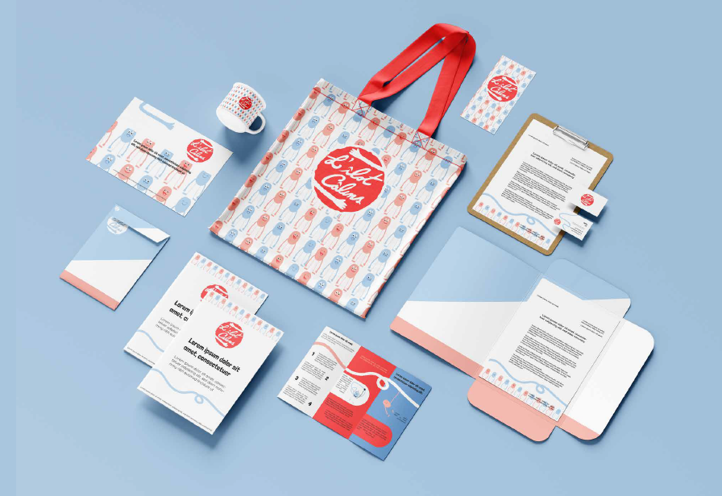
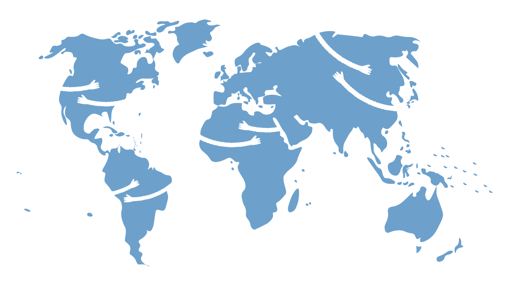
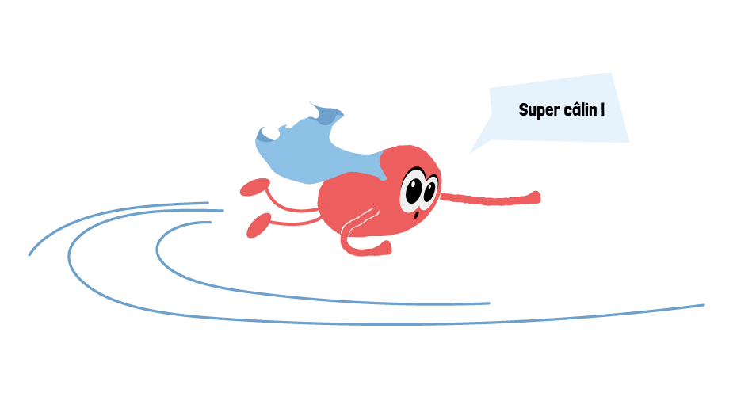
Cliquez sur une image pour l'agrandir